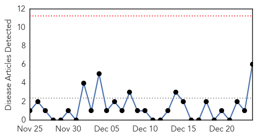
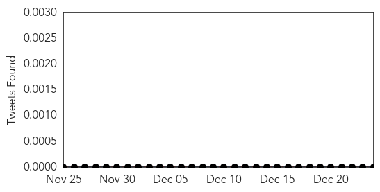
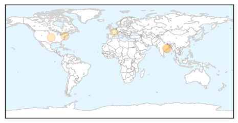
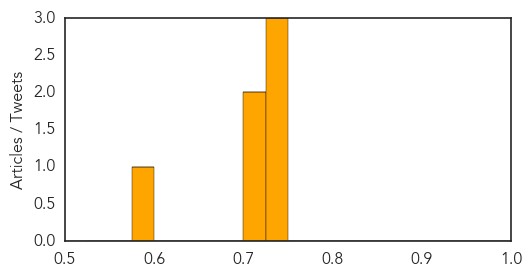

Hepatitis
30-Day Web Trend
0 alerts, 0 warnings

30-Day Twitter Trend
0 alerts, 0 warnings

Article Locations
Article Confidences
Top Articles:
- 0.743
- Hepatitis Patients Often "Fall Off" the Treatment Path
- 0.737
- Jaundice outbreak: Central team to visit Sambhalpur in Odisha
- 0.728
- Central team to help Odisha in tackling jaundice Nadda
- 0.713
- Central team to help Odisha in tackling jaundice: Nadda
- 0.709
- Central team to help Odisha in tackling jaundice: Nadda
- 0.596
- New Study Shows A Link Between The Hep B Vaccine And Multiple Sclerosis, Again
Top Tweets:
-
No tweets found for Dec 24, 2014
West Nile Virus
30-Day Web Trend
0 alerts, 0 warnings
30-Day Twitter Trend
1 alerts, 0 warnings
Article Locations

Article Confidences

Top Articles:
-
No articles found for Dec 24, 2014
Top Tweets:
-
No tweets found for Dec 24, 2014